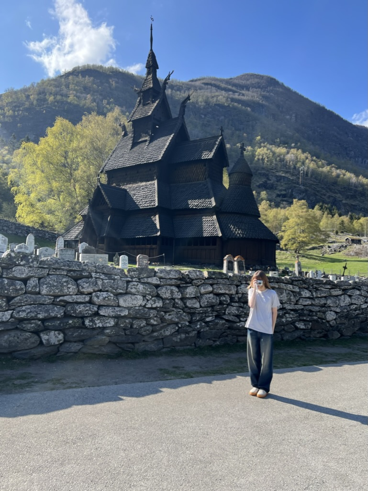

{ about me }
Elise Brooks, she/her.
born and raised in colorado springs.

me at the borgund stavchurch in norway!
some goals and other info...
i want to learn more about web design and learn a new coding language!
i like to ski, but i want to learn how to snowboard.
i also want to learn a new instrument. i played the flute for three years, but want to learn piano or guitar.
my free time is spent reading or crafting (crocheting, painting, etc).
- my favorite book that i've read recently is Pachinko by Min Jin Lee!
i like to use youtube to find new music that i wouldn't find elsewhere.